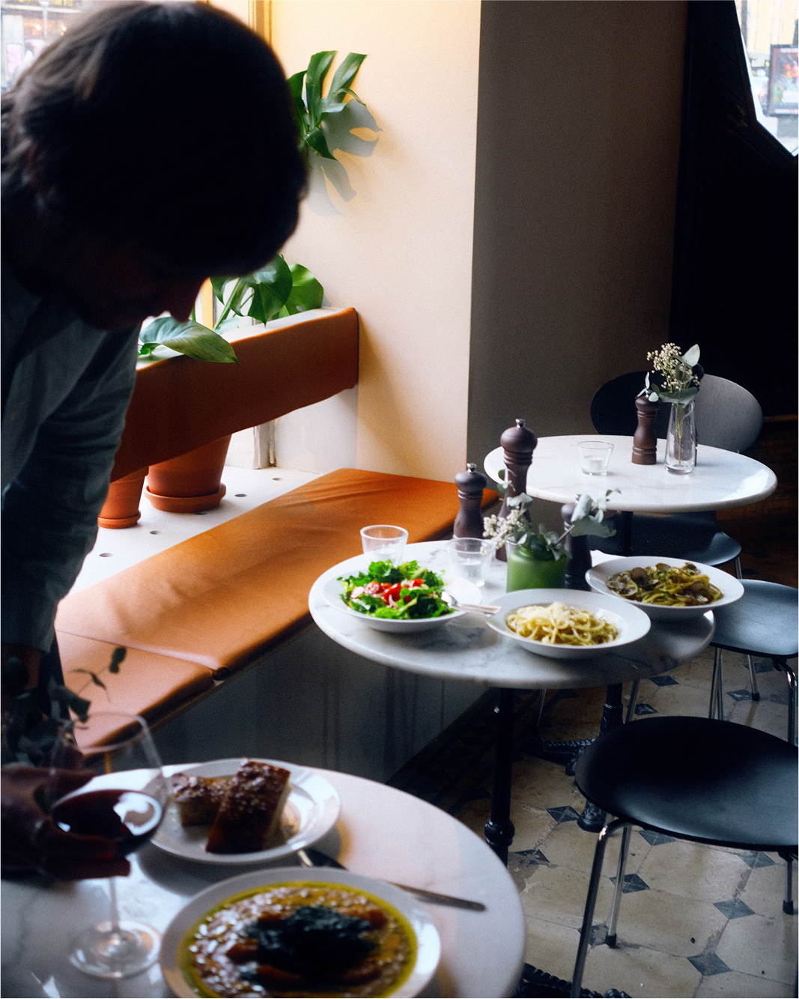
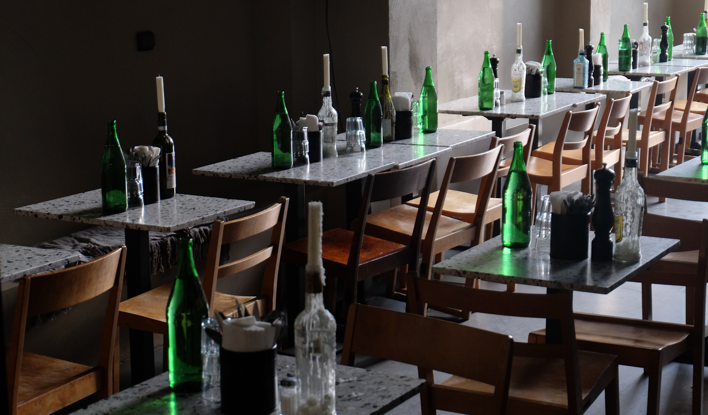
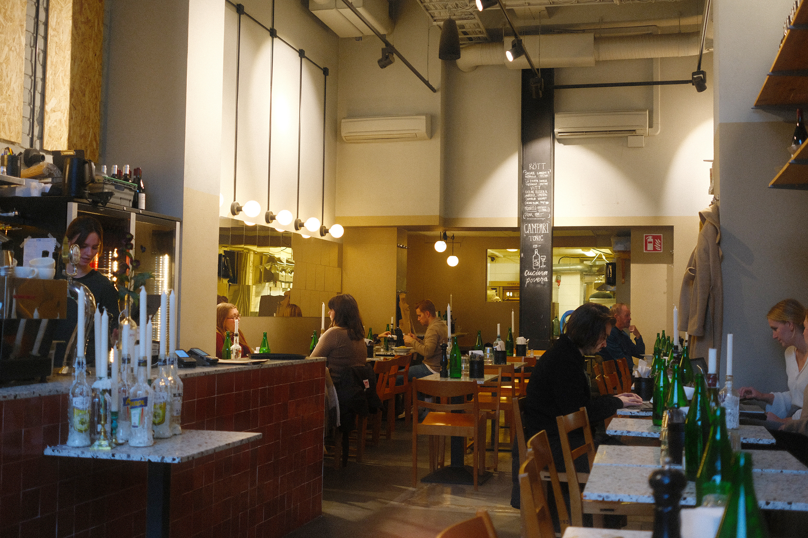

Vi skapar mat som gör gott: för dig, för hälsan och för planeten
Intro
Vi tror att vägen framåt börjar med mat från grunden. Genom Real Food Solutions utvecklar vi restauranger och koncept baserade på riktig, vällagad mat. Vi kombinerar traditionella tekniker med smart logistik för att göra god, näringsrik mat tillgänglig för fler, utan tillsatser eller konstgjorda ingredienser.



koncept
Här är några av våra koncept som visar hur vi omsätter vår filosofi i praktiken.
Ta’ameya falafel
Egyptisk street food med naturligt växtbaserade rätter. Ta’ameya (favaböns-falafel) och nybakat pitabröd står i centrum. Ett hälsosamt koncept med värme och precision.
Cucina Povera
Syditaliensk comfort food med pasta, kaffe och pizza. Färska råvaror och snabb tillagning utan stekning. Ett avslappnat koncept med värme och precision i vardagen.
Non Parlo Italiano
Italiensk fine dining med fokus på fisk och skaldjur. Råvaror i toppklass möter hantverk och smakbalans.
Danderyds Saluhall & Bageri
Levererar nybakat hantverksbröd och bullar - både till våra restauranger och direkt till gästerna.